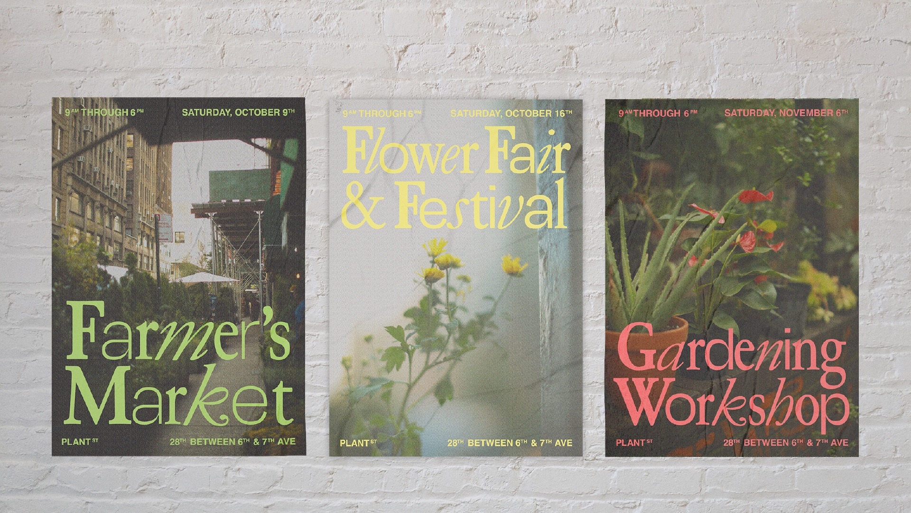
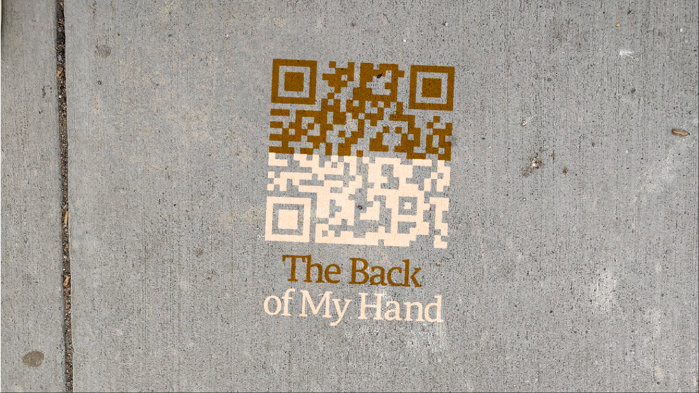
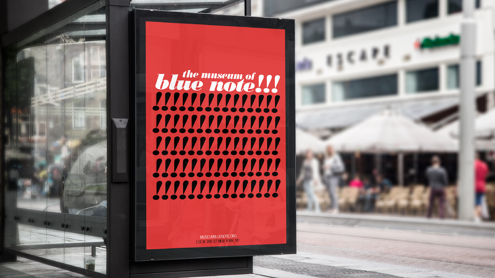

A Typographic Study of the Ten Point Program (2021)
A series of posters that take inspiration from the visuals/language used by the Black Panther Party.

The Reliability of Wikipedia (2021)
A book on the reliability of Wikipedia, sourced from Wikipedia.
Dilly Dally (2022)
A mobile, web-based, time-wasting microgame.
Plant St. (2022)
A visual identity for a community of NYC plant stores.
The Back of my Hand (2022)
An interactive memoir of my experience of being a second-gen immigrant.
The Museum of Blue Note (2022)
A museum brand identity for the legendary Blue Note Records.